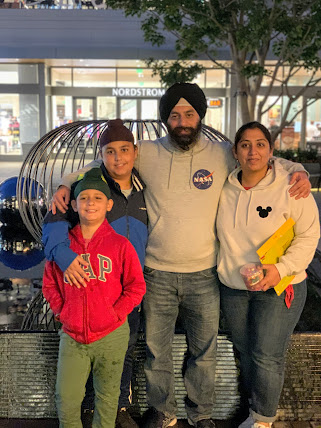
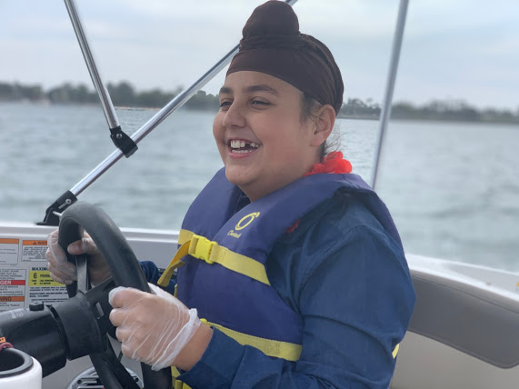
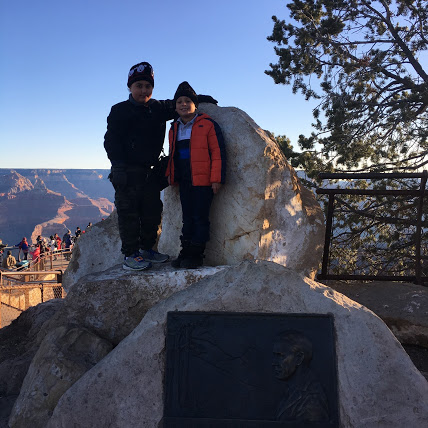

hello, I am the web kid,also known as Harkirat Hattar. I take inspiration from this quote, and want to leave a mark in web development.
I live in a family of four people. I have a little brother, And my mom and dad.My age is 12, as of this year.I live in san deigo. It is a great place to visit. I have deen on many trips. I can proudly say that I have been to all the atractions in the western side of the USA. My favorite trip though, was when I went to the redwoods.I am a a more of naturistic guy I would pick snorcling or horse riding over disneyland any day. like A lot of people have asked me, "What Is thet thing on your head?"It is called a patka, you can call it a turbun. It is on my head because of my religion. My religion is Sikh. It means learner. I have some websites my favorite being my animal research project It is a website where you can find almost all the information on any animal! My first project was a tic tac toe game It is a very cool looking project to try out.If you wish to contact me fill out this contact form These are some pictures of me:
  